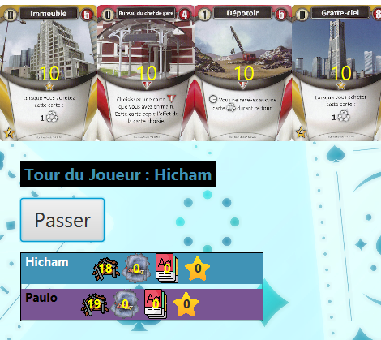
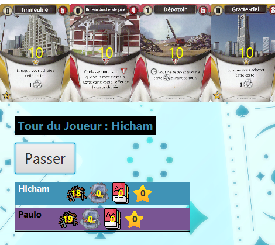

TRAINS

Contexte
Lors de ma première année, j'ai participé au développement du jeu Trains, un jeu de stratégie où les joueurs construisent et développent un réseau ferroviaire en utilisant des cartes représentant des trains, des stations et des actions spéciales. Ce jeu mêle des éléments de construction de deck et de gestion de ressources. L'objectif est de surpasser les autres joueurs en acquérant des cartes permettant d'étendre son réseau ferroviaire. Pour ce projet, nous étions responsables de la partie back-end (logique du système, méthodes, etc.) en Java, ainsi que de la partie front-end (interface utilisateur, etc.) en JavaFX. Ce projet était réalisé en équipe de 2 et a été coupé en 2 phases. La première phase était destinée à coder la logique du jeu en Java (comportement des cartes ainsi que d'autres fonctionnalités), et la deuxième consistait à implémenter une interface graphique sous JavaFX.
Apprentissages réalisés
En travaillant sur ce projet, je me suis amélioré en termes de communication, ainsi qu'en développement Java, en codant le comportement des différentes cartes présentes dans le jeu, ainsi que certaines fonctionnalités (comme le retrait ou le gain d'étoiles). J'ai également appris à utiliser le framework JavaFX, ainsi que ScèneBuilder, et à implémenter une interface utilisateur qui répond aux besoins du client. J'ai également appris à être autonome et à résoudre les différents problèmes que l'on a rencontrés, que ce soit techniques ou en termes d'organisation. J'ai également appris à réaliser des tests unitaires afin de tester le bon fonctionnement de mon application. Dans ce projet, j'ai eu l'opportunité de mettre en œuvre les différentes notions de la théorie des graphes (comme l'algorithme de Dijkstra) ou de qualité de développement (tests unitaires, etc.), ainsi que les compétences apprises lors du Semestre 2, comme le développement orienté objet.

 
